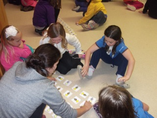
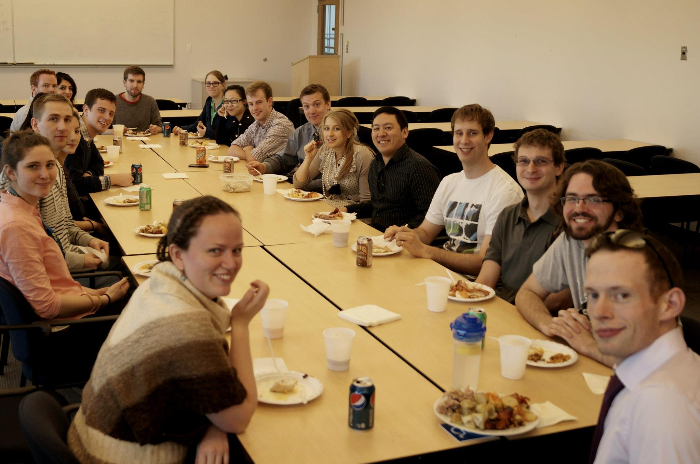

We plan events ranging from interactive workshops to general planning meetings to watching movies and going on walks. As always, everyone is welcome. Most recently we ran a 3D printing workshop where students learned about the applications of the 3D printer and its uses on campus. Our executive meetings happen every other Monday at 4:00 in ECS 668. We also have tea every Tuesday at 3:30 in the same room. See the calendar for the next date.
One of the goals of WECS is to invite speakers to address the students of the University of Victoria and share their experiences. Typically we try to find speakers who are female and work in areas interesting to engineering and computer science students. Regardless, these are open events and all members of the community are encouraged to participate. Tea and cookies are provided at every speaker event but we ask that you ing your own mug in an effort to reduce waste.
Some notable speakers :During the Spring of 2013 WECS created an outreach program aimed at girls ages 5-9. We took our program to local Girl Guide groups and taught participants about Computer Science and Engineering. Through team based activities the girls learned interesting facts about how a computer works as well as how to plan and execute building a simple structure. We received overwhelmingly positive feedback from the participants parents and guide leaders, and we look forward to continuing this program in the following years.
"CSC Revealed" is the WECS based clinic series aimed at providing additional support to students taking first year introductory Computer Science courses at the University of Victoria. Graduate and senior undergraduate students lead interactive sessions where students are guided through examples tailored to what they are currently learning in class. These events also encourage mentorship between students.
Representatives from the Microsoft team from the Victoria office came in with engineers who had previously graduated from UVic. Their hiring manager provided a ief explanation about what Micrsoft expects in a resume and the volunteers provided individual feedback to all interested participants.
Two representatives from the Google team in Seattle came up Victoria to recruit UVic students and met with WECS separately for food and discussing future opportunities.
Held in conjunction with the Learning Through Diversity club. This potluck held in the spring of 2013 gave students a chance to network with their peers and eat all sorts of delicious food!
